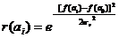
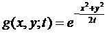
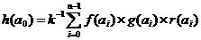
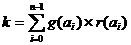
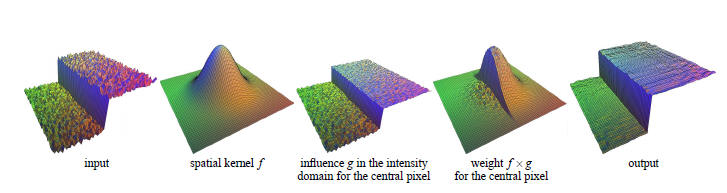
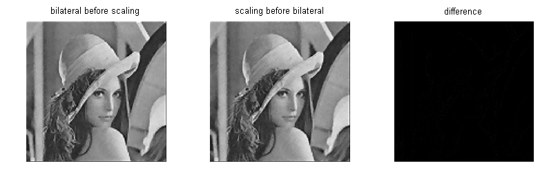

Bilateral
Filters
Bilateral filtering is a non-linear filtering technique introduced by Tomasi et
al. [1]. It extends the concept of Gaussian smoothing by weighting the filter
coefficients with their corresponding relative pixel intensities. Pixels that
are very different in intensity from the central pixel are weighted less even
though they may be in close proximity to the central pixel. This is effectively
a convolution with a non-linear Gaussian filter, with weights based on pixel
intensities. This is applied as two Gaussian filters at a localized pixel
neighborhood , one in the spatial domain, named the domain filter, and one in
the intensity domain, named the range filter. A very intuitive mathematical
approach is given in [5] as follows.
Let f: Re→Re be the original brightness function of an image which maps the coordinates
of a pixel (x, y) to a value in light intensity. Then for any given pixel a at (x,y)
within a neighborhood of size n, which has a0 as its centre, its coefficient
assigned by the range filter r(a) is determined by the following function:

Similarly, its coefficient assigned by the domain filter g(a) is determined by
the closeness function below:

where t is the scale parameter.
For the central pixel of the neighborhood a0 , its new
value, denoted by h(a0)

k is the normalization constant to maintain zero-gain and is defined as follows

Pixels close to the central pixel a0 in both space and
intensity contribute more than those further away in space and intensity. This
is represented graphically in Fig 8 (obtained from [7])
.

Fig 8: Bilateral filtering.
Both sigma_d and sigma_r determine the level of smoothness. setting
sigma_r to zero reduces the bilateral filter to a simple Gaussian smoothing
filter.
Use for Image Scaling.
We apply the bilateral filter above to our original image before the laplacian
edge detection to smooth out the noise while maintaining edges. We can then
enhance the edges without amplifying noise. Fig 9 shows the application of the
bilateral filter on same noisy image of Lena from the previous section .
Comparing the performance with vs. without bilateral filtering, the improvement
both in noise reduction and edge-preservation should be apparent.
Fig 9: Bilateral Filtering for noiseless edge preservation.
It is interesting to note that we explored application of the same bilateral
filter after scaling (adjusted corrected for new domain scale) rather than
before as shown in Fig 10. The results were very comparable (Fig. 9). It is computationally cheaper
hence preferable to perform the bilateral filtering prior to scaling.

Fig 10: Comparison between bilateral before and after
scaling and the difference between them.
Home